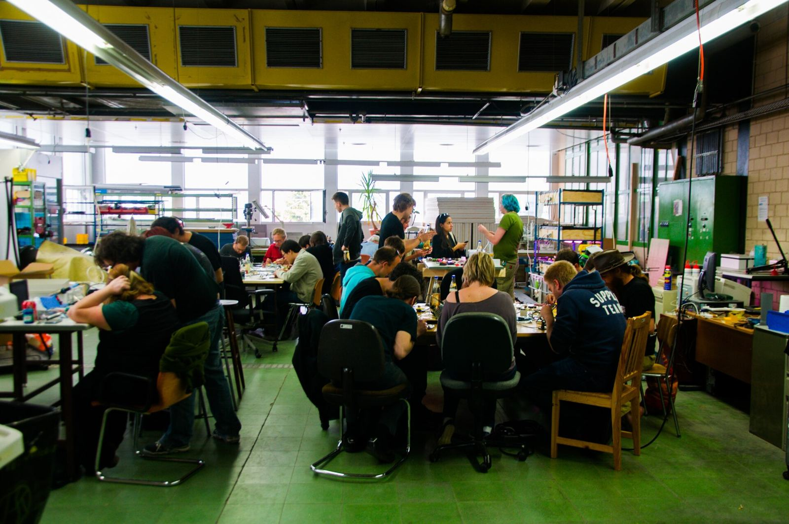
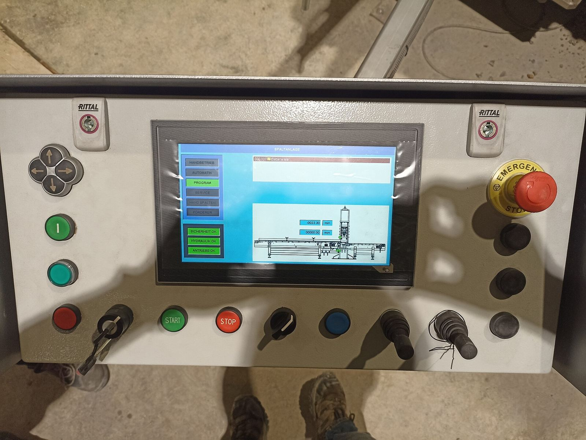

Siswa SMK
Jurusan listrik, elektronika, mekatronika, atau komputer yang ingin bekal praktik sebelum magang dan bekerja.
Kursus praktik IoT, elektronika, PLC, HMI/SCADA, dan jaringan industri untuk siswa, mahasiswa, teknisi, dan tim perusahaan di Medan dan Sumatera Utara. Jadwal kelas segera diumumkan.

Kelas dibuat untuk orang yang ingin bisa mengerjakan, bukan sekadar tahu teorinya. Materi dasar cocok untuk pemula, dan bisa diperdalam untuk yang sudah bekerja di lapangan.
Jurusan listrik, elektronika, mekatronika, atau komputer yang ingin bekal praktik sebelum magang dan bekerja.
Teknik elektro, mesin, informatika, atau pertanian yang sedang menyiapkan tugas akhir, lomba, atau proyek IoT.
Teknisi listrik dan perawatan yang setiap hari berhadapan dengan panel, sensor, dan mesin, lalu ingin bisa membaca dan mengubah programnya.
Engineer yang perlu menyegarkan dasar PLC dan SCADA, atau mulai menghubungkan mesin ke jaringan dan dashboard.
Tim pabrik, kebun, atau gedung yang ingin dilatih bersama memakai contoh dari peralatan mereka sendiri.
Guru yang ingin membawa pelajaran IoT dan otomasi ke kelas dengan kegiatan yang langsung dipraktikkan siswa.
Kelas umum masih disiapkan. Daftarkan minat Anda sekarang, dan kami kabari begitu tanggalnya ditetapkan.
Membaca sensor, mengirim data lewat Wi-Fi, dan menampilkannya di dashboard sederhana.
Membaca skema, memakai multimeter, dan menyolder rangkaian sampai rapi dan aman.
Wiring input dan output, logika ladder, timer, counter, dan mencari kesalahan program.
Membuat layar operator, tombol, indikator, alarm, dan grafik tren dari data PLC.
Menghubungkan PLC, sensor, dan gateway, lalu mengirim data dari lapangan ke server.
Memilih, memasang, dan merawat sensor cuaca, tanah, dan air di lokasi terbuka.
Materi dan jadwal disusun mengikuti peralatan dan kebutuhan tim Anda.
Setiap kursus memakai perangkat asli yang bisa dipegang, dirakit, dan diprogram sendiri. Peserta diajak mencoba, membuat kesalahan, lalu mencari penyebabnya, karena begitulah pekerjaan di lapangan.
Contoh kegiatan di kelas:

Kirim WhatsApp ke +62 822-7222-6678 dan sebutkan kursus yang Anda minati.
Siswa, mahasiswa, teknisi, atau tim perusahaan, serta berapa orang yang ikut.
Saat jadwal kelas ditetapkan, kami hubungi Anda dengan detail dan penawaran.
Datang, praktik, dan bawa pulang pemahaman yang bisa langsung dipakai.
Jadwal kelas umum segera diumumkan. Daftarkan minat Anda lewat WhatsApp, dan kami hubungi Anda begitu tanggalnya ditetapkan.
Harga bisa dinego dan tergantung kursus, jumlah peserta, dan lokasi. Chat kami di WhatsApp, dan kami kirim penawaran yang sesuai.
Boleh. Kursus dasar dibuat untuk peserta yang baru mulai. Ceritakan pengalaman Anda saat mendaftar agar kami bisa menyarankan kursus yang paling cocok.
Bisa. Pelatihan in-house diatur sesuai permintaan, dengan materi dan jadwal yang disesuaikan dengan peralatan dan kebutuhan tim Anda.
Daftarkan minat Anda sekarang. Kami kabari jadwalnya, atau atur pelatihan khusus untuk tim Anda.